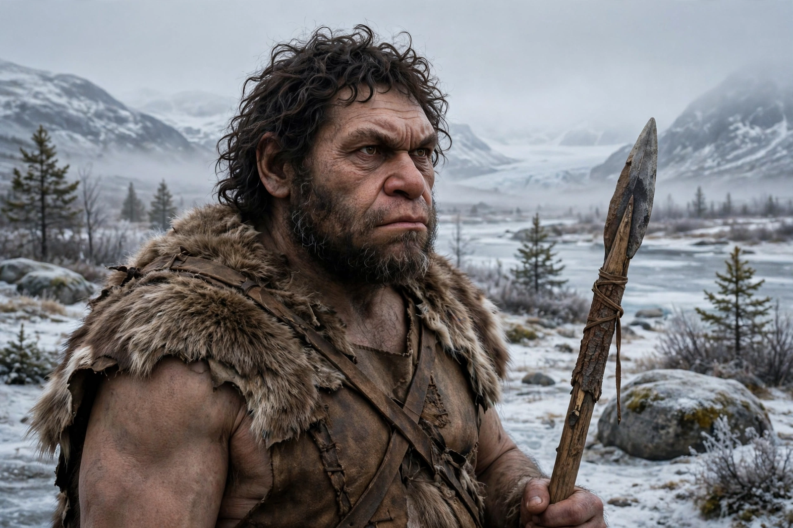

Neanderthals

| Neanderthals (Homo neanderthalensis) | |
| Temporal range | c. 430,000 – 40,000 years ago |
|---|---|
| Range | Europe and western/central Asia |
| First recognised | 1856, Neander Valley, Germany (Neanderthal 1) |
| Culture | Mousterian (Levallois) stone tools |
| Extinction | c. 40,000 years ago |
Neanderthals (Homo neanderthalensis) were an extinct group of archaic humans who lived in Europe and Asia from about 430,000 years ago until their disappearance around 40,000 years ago. Closely related to modern humans — with whom they interbred — they were adapted to the cold climates of Ice Age Eurasia and are the best-known of all extinct human relatives.
Discovery
Bones found in 1856 in the Feldhofer Cave in Germany's Neander Valley were recognised in 1864 by William King as a distinct species, Homo neanderthalensis — the first fossil human species ever named. Earlier finds in Belgium (Engis, 1829) and Gibraltar (1848) were appreciated only in retrospect. Famous sites include La Chapelle-aux-Saints and Le Moustier in France, Spy in Belgium, and Shanidar Cave in Iraq.
Anatomy
Neanderthals were stocky and powerfully muscled, with short limbs, broad noses, prominent brow ridges, receding foreheads and chins, and brains as large as or larger than ours ( averaging slightly above modern values). Isotopic analyses show a diet dominated by meat from large herbivores, though plant foods, seafood, and occasionally cannibalised remains are also attested.
Culture
Neanderthals made sophisticated Mousterian tools using prepared-core techniques, hafted stone points onto spears with birch-bark tar, controlled fire, wore animal skins and possibly ornaments (perforated shells and eagle talons), used pigments, and buried at least some of their dead. Debated claims of cave art in Spain dated to over 64,000 years ago would, if correct, predate modern humans in Europe and imply symbolic art.
Interbreeding and extinction
The sequencing of the Neanderthal genome (2010, Svante Pääbo's team) showed that present-day non-African populations carry about 1–4% Neanderthal ancestry; Neanderthals also interbred with their Siberian cousins the Denisovans. Their disappearance around 40,000 years ago likely reflects a combination of climate instability, small population size, competition with expanding modern humans, and absorption into them. Genetic traces — affecting immunity, skin, and hair — remain their living legacy.
See also: Homo erectus, Jebel Irhoud